Från livsviktig svamp till snustorr mark
Sveriges våtmarker har under lång tid fått ge vika för infrastruktur. Istället för att rena vårt vatten och binda koldioxid, har enorma ytor blivit överbyggda eller påverkade av människan. Men var i landet är påverkan som störst?
Använd vår interaktiva karta för att se den totala ytan våtmark som var påverkad år 2024. Vi delar upp det i direkt exploatering (mark som asfalterats eller byggts över) och indirekt exploatering (mark som förstörts i influenszonen runt omkring).
Källor
Naturvårdsverket. (u.å.). Våtmarker och klimat.
Trafikverket. (2023). Våtmarker – slutrapport inklusive bilagor.
Data
Statistiska centralbyrån (SCB) – Exploaterad våtmark efter region och typ av exploatering, i hektar. År 2020 - 2024
Trovärdighet: SCB framställer Sveriges officiella statliga statistik. Datan är politiskt oberoende och insamlad med rigorösa vetenskapliga metoder, vilket garanterar och säkerställer att vår analys bygger på objektiva fakta snarare än uppskattningar.
VIKTIGA OBSERVATIONER
Industrins pris i norr
Vilka regioner och typer av exploatering dominerar?
Gå till diagram →Vägarna som osynliga barriärer
Vad orsakar störst påverkan på våtmarker?
Gå till diagram →
En förlorad klimatsköld
Hur har exploateringen förändrats över tid?
Gå till diagram →Glesbygden tar smällen för hela landet
Hur påverkas våtmarker i relation till befolkning?
Gå till diagram →VISSTE DU DETTA?

Vad är en våtmark?
Ett område där vatten finns precis över eller under markytan och där hälften av vegetationen frodas i vatten, till exempel myrar och strandvåtmarker.
Källa: Naturvårdsverket, 2023

Viktiga för samhället
För att vi ska uppnå en hållbar utveckling är det avgörande att skydda våtmarkernas tjänster. De hjälper samhället att anpassa sig till klimatförändringar och stabiliserar ekonomin.
Källa: Waly & Mickovski, 2022

Hem för hotade arter
Våtmarker är en av Sveriges mest artrika miljöer. Hela 10 % av alla rödlistade växt- och djurarter i Sverige är helt beroende av dessa områden för sin överlevnad.
Källa: Naturvårdsverket, 2025

Naturens eget kollager
Torven binder aktivt kol. Om våtmarkerna torkar ut eller förstörs ökar utsläppen av växthusgaser markant, vilket gör dem kritiska att bevara och restaurera.
Källa: Naturvårdsverket, 2025 & 2026